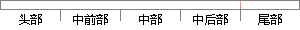

感谢十二室的领导和同事对我学习和工作上的支持和关心；
片段位置图

相似结果|
相似片段 1：给我的教育和支持，感谢给我授课的恩师们，感谢他们对我的帮助与教诲。同时，也感谢我的同学们，从他们身上我学到了许多东西。感谢我单位的领导和同事们对我学习的支持与鼓励，从始至终，他们一直在为我提供工作上
|
※ 片段修改建议 ※
近似词参考：- 感谢：感激 谢谢
- 领导：带领 辅导 向导
- 学习：进修
- 支持：撑持 支撑
- 关心：体贴 关切
系统自动生成语句：感激十二室的带领和同事对我进修和工作上的撑持和体贴；
注：本片段修改建议为系统自动生成，仅供参考。